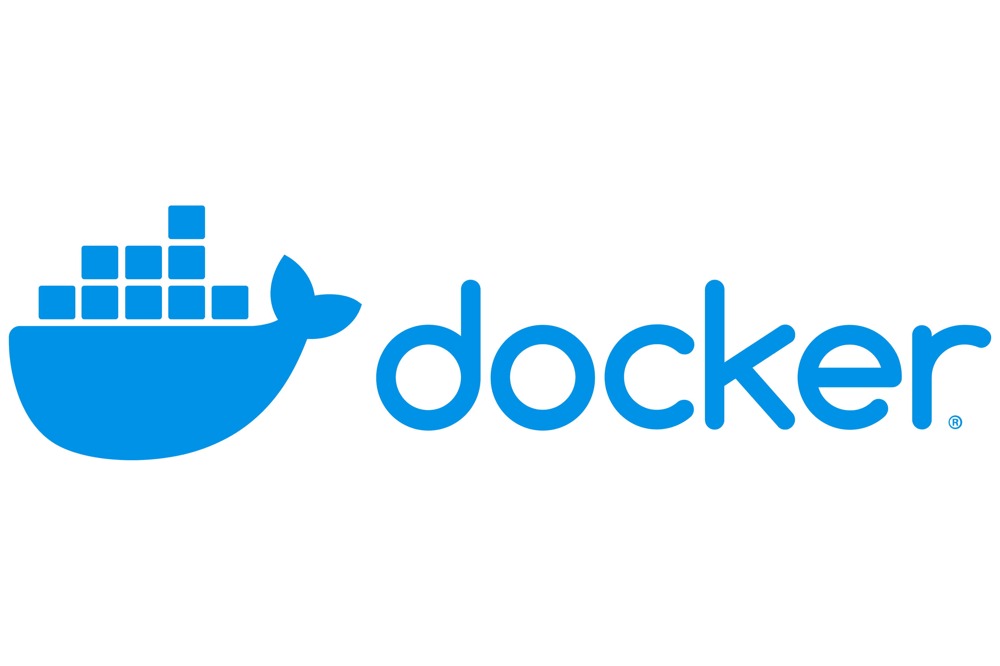
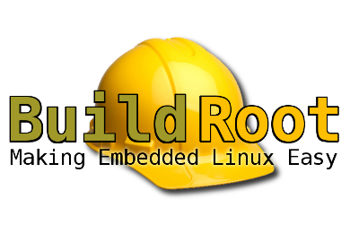

How to use Docker to Master CS50x Locally
Learn how to set up a powerful local development environment for Harvard's CS50x using Docker. This guide will show you how to leverage Docker to run the CS50x C Library (libcs50) and tools such as Valgrind for memory debugging. By the end, you'll have a robust understanding of Docker and the role it plays to help developers have isolated environments for applications.

What is Buildroot? My Start to Embedded Linux
In this blog, I will take you on my journey of exploring embedded Linux through Buildroot, a powerful tool for creating custom Linux systems. Discover how I got started with Buildroot, its role in simplifying the embedded Linux development process, and the key insights I gained along the way.